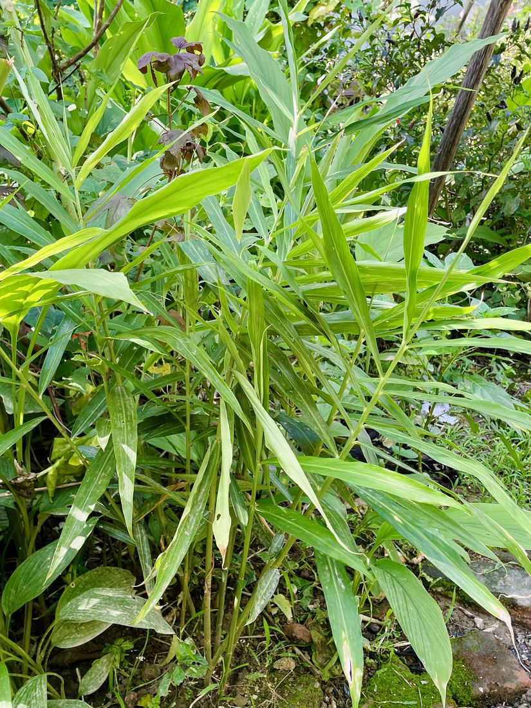
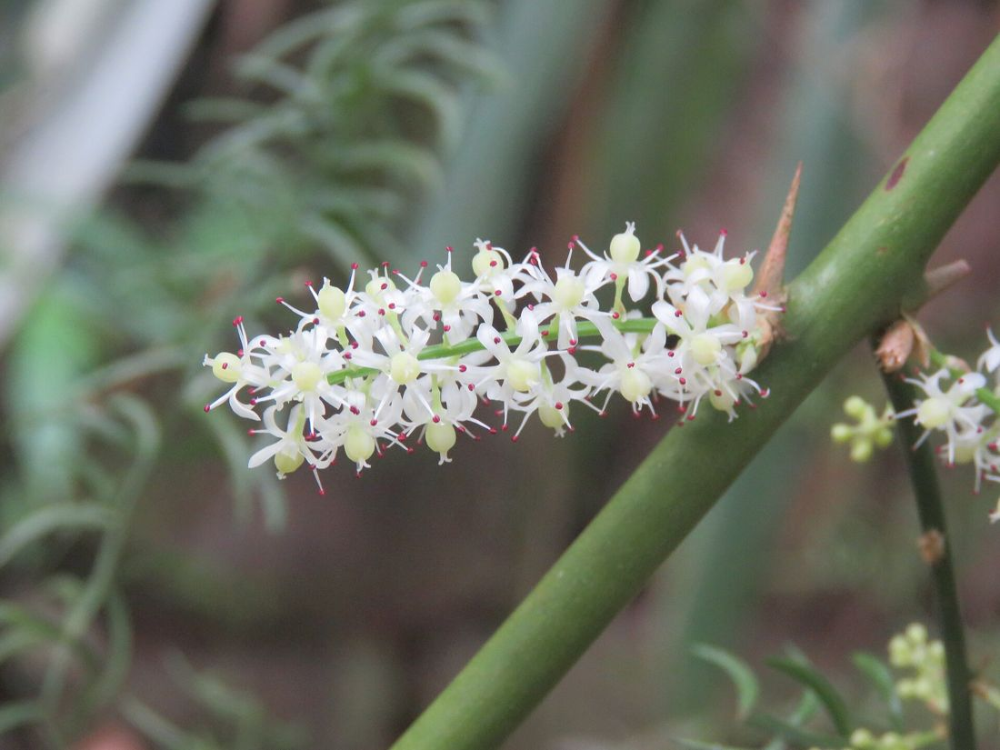
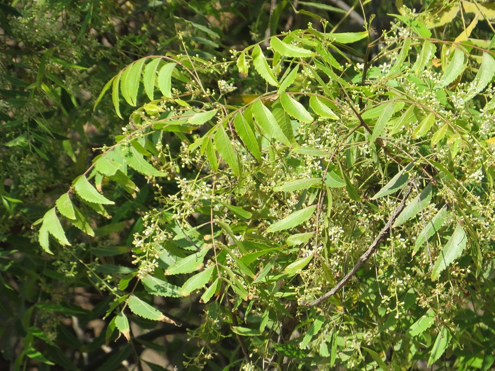
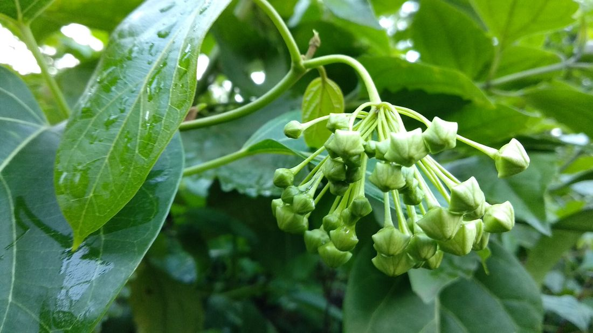
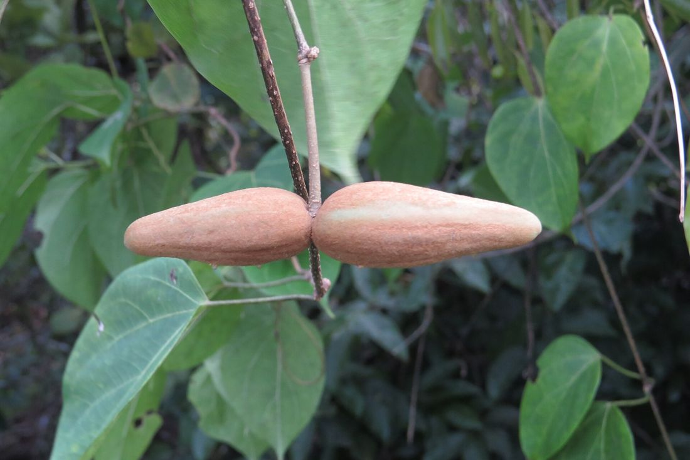
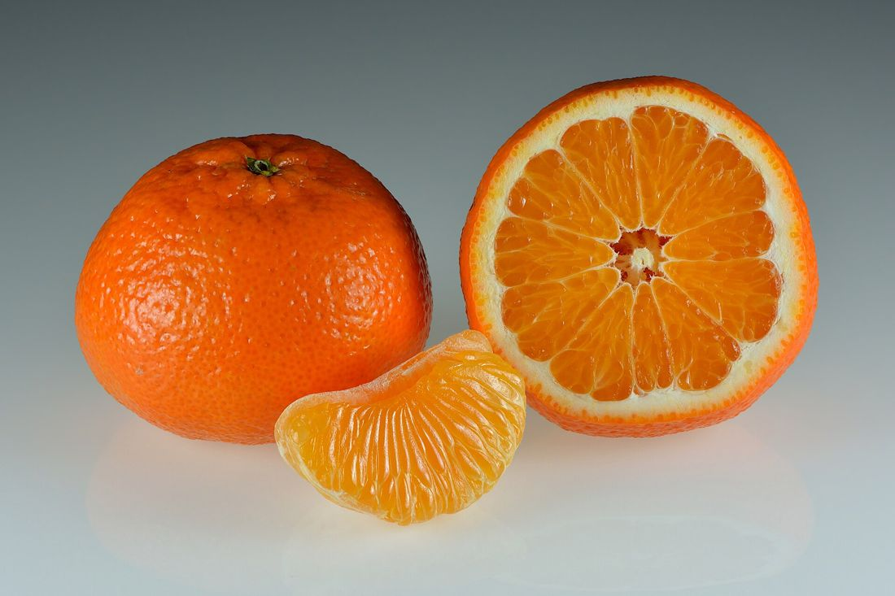

Herbal Garden
Scan, discover and learn about the plants growing around you. Each plant in the garden has a QR code. Scan it, or pick a plant below.


Spice & Medicinal Herb
Garlic
Allium sativumSudu Lunu · සුදු ළූණු

Medicinal & Traditional Herb
Pawatta / Adathoda
Justicia adhatodaPawatta, Adathoda · පාවට්ටා / ආඩතෝඩා

Spice & Traditional Herb
Ginger
Zingiber officinaleInguru · ඉඟුරු

Medicinal Climber
Hathawariya (Wild Asparagus)
Asparagus racemosusHathawariya · හාතවාරිය

Medicinal Succulent
Komarika (Aloe Vera)
Aloe veraKomarika · කෝමාරිකා

Medicinal Tree
Neem
Azadirachta indicaKohomba · කොහොඹ

Spice & Traditional Herb
Turmeric
Curcuma longaKaha · කහ

Medicinal Climber & Leafy Vegetable
Kiri Aguna
Dregea volubilisKiri Aguna · කිරි අඟුණ

Fruit Tree
Mandarin Orange
Citrus reticulataNarang · නාරං
Endemic Forest Tree
Dummala
Vatica obscuraDummala · දුම්මල

Spice Tree
Clove
Syzygium aromaticumKarabu · කරාබු

Aromatic Tree
Sandalwood
Santalum albumSudu Handun · සුදු හඳුන්No plants match your search.